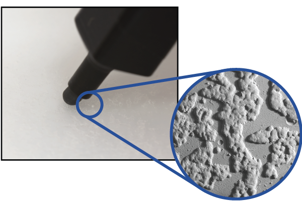
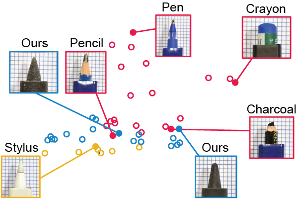

Michal Piovarci
Postdoc at ETH Zurich
contact: piovarci@arch.ethz.chShort Bio
I am a postdoc at ETH Zurich in the Computational Design Lab led by Bernd Bickel. Before I was a postdoctoral researcher at ISTA in the Visual Computing Group. I obtained my Ph.D. at USI Lugano under the supervision of Piotr Didyk in 2020. My thesis entitled Perception-Aware Computational Fabrication recieved the prestegious Eurographics PhD Award. My research interests are computer graphics, computational fabrication, haptic reproduction, appearance reproduction, and perception.
Professional Activities
2024 - ACM Symposium on Computational Fabrication, area chair (Computer Graphics/Fabrication)2024 - Symposium on Applied Perception (SAP), program committee 2023 - ACM SIGGRAPH Asia, program committee 2023 - Symposium on Applied Perception (SAP), program committee 2023 - Eurographics, short paper program committee 2022 - Symposium on Applied Perception (SAP), program committee 2022 - Co-organizer of Computational Fabrication Seminar 2022 - ACM Symposium on Virtual Reality Software and Technology (VRST), poster and demo chair 2021 - Co-organizer of Computational Fabrication Seminar 2018 - now - Reviewer for ACM SIGGRAPH, ACM SIGGRAPH ASIA, ACM CHI, ACM UIST, Eurographics, and IEEE ICRA
Grants and Projects
2025 - 2029 SNSF Project Funding (up to 1,000,000 CHF) 2022 - 2023 - Perception-Aware Appearance Fabrication (FWF Lise Meitner M3319)Teaching
2024 - Scientific Machine and Deep Learning for Design and Construction (ETH Zurich)2022 - Computational Fabrication (TU Wien)
Publications
Squishicalization: Exploring Elastic Volume Physicalization
Daniel Pahr, Michal Piovarci, Hsiang-Yun Wu, Renata G. Raidou
IEEE TVCG 2024
Daniel Pahr, Michal Piovarci, Hsiang-Yun Wu, Renata G. Raidou
IEEE TVCG 2024
The Effect of Display Capabilities on the Gloss Consistency Between Real and Virtual Objects
Bin Chen, Akshay Jindal, Michal Piovarci, Chao Wang, Hans-Peter Seidel, Piotr Didyk, Karol Myszkowski, Ana Serrano, Rafal K. Mantiuk
SIGGRAPH ASIA 2023
Bin Chen, Akshay Jindal, Michal Piovarci, Chao Wang, Hans-Peter Seidel, Piotr Didyk, Karol Myszkowski, Ana Serrano, Rafal K. Mantiuk
SIGGRAPH ASIA 2023

Skin-Screen: A Computational Fabrication Framework for Color Tattoos
Michal Piovarci, Alexandre Chapiro, Bernd Bickel
SIGGRAPH 2023
Michal Piovarci, Alexandre Chapiro, Bernd Bickel
SIGGRAPH 2023

Gloss-aware Color Correction for 3D Printing
Jorge Condor, Michal Piovarci, Bernd Bickel, Piotr Didyk
SIGGRAPH 2023
Jorge Condor, Michal Piovarci, Bernd Bickel, Piotr Didyk
SIGGRAPH 2023
Learning Deposition Policies for Fused Multi-Material 3D Printing
Kang Liao*, Thibault Tricard*, Michal Piovarci, Hans-Peter Seidel, Vahid Babaei
ICRA 2023
Kang Liao*, Thibault Tricard*, Michal Piovarci, Hans-Peter Seidel, Vahid Babaei
ICRA 2023

Directionality-Aware Design of Embroidery Patterns
Liu Zhenyuan, Michal Piovarci, Christian Hafner, Raphael Charrondiere, Bernd Bickel
Eurographics 2023
Liu Zhenyuan, Michal Piovarci, Christian Hafner, Raphael Charrondiere, Bernd Bickel
Eurographics 2023

Gloss Management For Consistent Reproduction of Real and Virtual Objects
Bin Chen, Michal Piovarci, Chao Wang, Hans-Peter Seidel, Piotr Didyk, Karol Myszkowski, Ana Serrano
SIGGRAPH ASIA 2022
Bin Chen, Michal Piovarci, Chao Wang, Hans-Peter Seidel, Piotr Didyk, Karol Myszkowski, Ana Serrano
SIGGRAPH ASIA 2022

Closed-Loop Control of Direct Ink Writing via Reinforcement Learning
Michal Piovarci*, Michael Foshey*, Jie Xu, Timothy Erps, Vahid Babaei, Piotr Didyk, Szymon Rusinkiewicz, Wojciech Matusik, Bernd Bickel
SIGGRAPH 2022
Michal Piovarci*, Michael Foshey*, Jie Xu, Timothy Erps, Vahid Babaei, Piotr Didyk, Szymon Rusinkiewicz, Wojciech Matusik, Bernd Bickel
SIGGRAPH 2022
Capturing Tactile Properties of Real Surfaces for Haptic Reproduction
Donald Degraen, Michal Piovarci, Bernd Bickel, Antonio Kruger
UIST 2021
Donald Degraen, Michal Piovarci, Bernd Bickel, Antonio Kruger
UIST 2021
The effect of shape and illumination on material perception: model and applications
Ana Serrano, Bin Chen, Chao Wang, Michal Piovarci, Hans-Peter Seidel, Piotr Didyk, Karol Myszkowski
SIGGRAPH 2021
Ana Serrano, Bin Chen, Chao Wang, Michal Piovarci, Hans-Peter Seidel, Piotr Didyk, Karol Myszkowski
SIGGRAPH 2021
The Effect of Geometry and Illumination on Appearance Perception of Different Material Categories
Bin Chen, Chao Wang, Michal Piovarci, Hans-Peter Seidel, Piotr Didyk, Karol Myszkowski, Ana Serrano
The Visual Computer 2021
Bin Chen, Chao Wang, Michal Piovarci, Hans-Peter Seidel, Piotr Didyk, Karol Myszkowski, Ana Serrano
The Visual Computer 2021

Perception-Aware Computational Fabrication: Increasing The Apparaent Gamut of Digital Fabrication
Michal Piovarci under supervision of Piotr Didyk
Dissertation Thesis
Michal Piovarci under supervision of Piotr Didyk
Dissertation Thesis
Tactile Perception of Randomly Rough Surfaces
Riad Sahli, Aubin Prot, Anle Wang, Martin H. Muser, Michal Piovarci, Piotr Didyk, Roland Bennewitz
Nature Scientific Reports 2020
Riad Sahli, Aubin Prot, Anle Wang, Martin H. Muser, Michal Piovarci, Piotr Didyk, Roland Bennewitz
Nature Scientific Reports 2020
Towards Spatially Varying Gloss Reproduction for 3D Printing
Michal Piovarci, Michael Foshey, Vahid Babaei, Szymon Rusinkiewicz, Wojciech Matusik, Piotr Didyk
SIGGRAPH ASIA 2020
Michal Piovarci, Michael Foshey, Vahid Babaei, Szymon Rusinkiewicz, Wojciech Matusik, Piotr Didyk
SIGGRAPH ASIA 2020

Fabrication-in-the-Loop Co-Optimization of Surfaces and Styli for Drawing Haptics
Michal Piovarci, Danny M. Kaufman, David I.W. Levin, Piotr Didyk
SIGGRAPH 2020
Michal Piovarci, Danny M. Kaufman, David I.W. Levin, Piotr Didyk
SIGGRAPH 2020

Perception-Aware Modeling and Fabrication of Digital Drawing Tools
Michal Piovarci, David I.W. Levin, Danny M. Kaufman, Piotr Didyk
SIGGRAPH 2018
Michal Piovarci, David I.W. Levin, Danny M. Kaufman, Piotr Didyk
SIGGRAPH 2018

Design and Analysis of Directional Front Projection Screens
Michal Piovarci, Michael Wessely, Michal Jagielski, Marc Alexa, Wojciech Matusik, Piotr Didyk
Computers & Graphics 2018
Michal Piovarci, Michael Wessely, Michal Jagielski, Marc Alexa, Wojciech Matusik, Piotr Didyk
Computers & Graphics 2018

Skeletex: Skeleton-texture Co-representation for Topology-driven Real-time Interchange and Manipulation of Surface Regions
Martin Madaras, Adam Riecicky, Michal Mesaros, Martin Stuchlik, Michal Piovarci
PACIFIC GRAPHICS 2018
Martin Madaras, Adam Riecicky, Michal Mesaros, Martin Stuchlik, Michal Piovarci
PACIFIC GRAPHICS 2018
Optical-inertial Synchronization of MoCap Suit with Single Camera Setup for Reliable Position Tracking
Adam Riecicky, Martin Madaras, Michal Piovarci, Roman Durikovic
VISIGRAPP 2018
Adam Riecicky, Martin Madaras, Michal Piovarci, Roman Durikovic
VISIGRAPP 2018

Directional Screens
Michal Piovarci, Michael Wessely, Michal Jagielski, Marc Alexa, Wojciech Matusik, Piotr Didyk
Symposium on Computational Fabrication 2017
Michal Piovarci, Michael Wessely, Michal Jagielski, Marc Alexa, Wojciech Matusik, Piotr Didyk
Symposium on Computational Fabrication 2017

An Interaction-Aware, Perceptual Model For Non-Linear Elastic Objects
Michal Piovarci, David I.W. Levin, Jason Rebello, Desai Chen, Roman Durikovic, Hanspeter Pfister, Wojciech Matusik, Piotr Didyk
SIGGRAPH 2016
Michal Piovarci, David I.W. Levin, Jason Rebello, Desai Chen, Roman Durikovic, Hanspeter Pfister, Wojciech Matusik, Piotr Didyk
SIGGRAPH 2016

Physically Inspired Stretching of Non-rigid Bodies
Michal Piovarci, Martin Madaras, Roman Durikovic
SCCG 2015
Michal Piovarci, Martin Madaras, Roman Durikovic
SCCG 2015
Skeleton-based Matching for Animation Transfer and Joint Detection
Martin Madaras, Michal Piovarci, Jana Behal Dadova, Roman Franta, Tomas Kovacovsky
SCCG 2014
Martin Madaras, Michal Piovarci, Jana Behal Dadova, Roman Franta, Tomas Kovacovsky
SCCG 2014

Rampaging Tornado
Small rendering project from university.
Small rendering project from university.